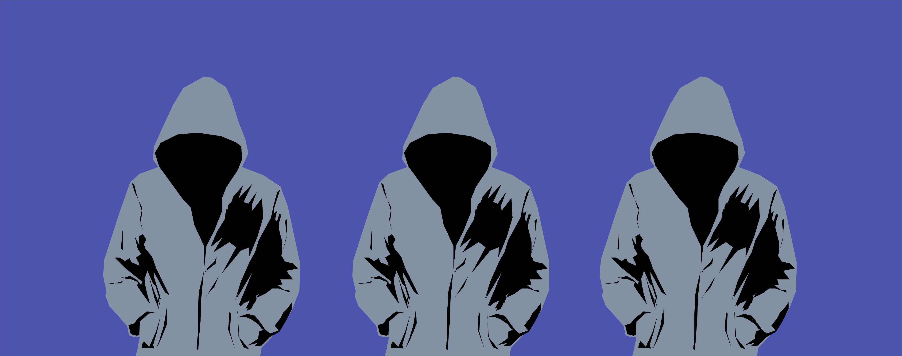

E1 Header Topic and Unit
Topic 2
That's important to me, you and us!
Topic 2That's important to me, you and us!
E3 Simple Text
In the unit «Fair for all of us» you will learn about specific and universal rules. In «Step 1» you will consider a set of rules and decide which ones are fair or unfair, and if they make sense at all. In «Step 2» you will take part in a thought experiment, create you own rules, discuss the results in class, and share the results in a discussion group. Afterwards you will read about the declaration of Human Rights and its articles in «Step 3» and decide which ones you consider fair or unfair. The unit ends with a «Self-evaluation».
In the unit «Fair for all of us» you will learn about specific and universal rules. In «Step 1» you will consider a set of rules and decide which ones are fair or unfair, and if they make sense at all. In «Step 2» you will take part in a thought experiment, create you own rules, discuss the results in class, and share the results in a discussion group. Afterwards you will read about the declaration of Human Rights and its articles in «Step 3» and decide which ones you consider fair or unfair. The unit ends with a «Self-evaluation».
E4 Instructional Text
Unit objectives: after studying this unit...
- I am able to understand the importance and limitations of universal rules. I am able to understand the importance and limitations of universal rules
- I can take part in a discussion by stating my point of view and giving reasons.
- I am able to change my perspective and view a problem from another point of view
In this unit you will learn and understand specific and universal rules. In «Step 1» you read a set of rules and decide which ones are fair or unfair and if they make sense at all. In «Step 2» you will take part in a thought experiment, create you own rules and discuss the results in class. You will then share the results in a discussion group. You will read about the declaration of Human Rights and its articles in «Step 3» and decide which ones you consider fair or unfair. This unit ends with a «Self-evaluation».
Unit objectives: after studying this unit...
- I am able to understand the importance and limitations of universal rules. I am able to understand the importance and limitations of universal rules
- I can take part in a discussion by stating my point of view and giving reasons.
- I am able to change my perspective and view a problem from another point of view
In this unit you will learn and understand specific and universal rules. In «Step 1» you read a set of rules and decide which ones are fair or unfair and if they make sense at all. In «Step 2» you will take part in a thought experiment, create you own rules and discuss the results in class. You will then share the results in a discussion group. You will read about the declaration of Human Rights and its articles in «Step 3» and decide which ones you consider fair or unfair. This unit ends with a «Self-evaluation».
E5 Header Step
Fair for all of us
Step 2
~ 120 min
Fair for all of usStep 2~ 120 min
E6 Header Step

Make an exciting experiment!
Make an exciting experiment!
E7 Task
Task 1
Read the following thought experiment:
Imagine you and your colleagues in this class had the possibility to determine the basic rules for the society you will live in. These rules will apply for everyone. While you and your colleagues discuss the rules and agree on the best ones, you are behind the veil of ignorance. Veil of ignorance means that you do not know, what you will be in this future society. When you have agreed on the rules and the veil of ignorance gets lifted, you might be rich or poor. You might be healthy, sick or have a disability. You might be a man, a woman, a child or an old person. You do not know the colour of your skin. You might be born and live in Brazil, Iceland, Afghanistan, Switzerland or any country around the world. You do not know which interests or skills you will have, nor what religion you belong to. You might be a Jew, Muslim, Christian, Bahai, or it might be that you do not believe in God at all.
While you can make the rules for society, you cannot change human nature. Some people will be nice, others selfish, some will be cruel, others nobel and generous.
(Idea by: Rawls, John (1971). A Theory of Justice)
Task 1Read the following thought experiment:Imagine you and your colleagues in this class had the possibility to determine the basic rules for the society you will live in. These rules will apply for everyone. While you and your colleagues discuss the rules and agree on the best ones, you are behind the veil of ignorance. Veil of ignorance means that you do not know, what you will be in this future society. When you have agreed on the rules and the veil of ignorance gets lifted, you might be rich or poor. You might be healthy, sick or have a disability. You might be a man, a woman, a child or an old person. You do not know the colour of your skin. You might be born and live in Brazil, Iceland, Afghanistan, Switzerland or any country around the world. You do not know which interests or skills you will have, nor what religion you belong to. You might be a Jew, Muslim, Christian, Bahai, or it might be that you do not believe in God at all.While you can make the rules for society, you cannot change human nature. Some people will be nice, others selfish, some will be cruel, others nobel and generous. (Idea by: Rawls, John (1971). A Theory of Justice)